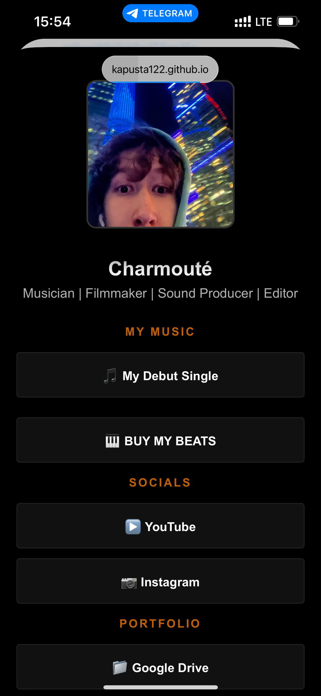

CITY FRAGMENT — 001Musician · Filmmaker · Producer
Charles Lonett
Songs, moving images & fragments of life.
“Music is the sound. Film is the image. Both tell the same story.”
A songwriter's world
01 — MusicLISTEN / PURCHASE
Listen to my musicReleases & original songs↗Buy my beatsInstrumentals / Licensing↗02 — FilmSELECTED WORKS
FILM / 001Moving imagesMusic videos · Cinematic editsFILM / 002Video editing portfolioCamera · Editing · Visual storytelling
Look what I can suggest as an editorSee my editing portfolio↗03 — ExperimentsSOUND / IMAGE
Charmouté — enter the other worldExperimental sound, visual studies & ideas↗04 — AboutA SHORT NOTE
An independent creative working with music, moving images and sound. Making songs, films, visual experiments and small fragments that feel worth keeping.
05 — ElsewhereFOLLOW / CONTACT
Instagram↗YouTube↗ContactGet in touch↗